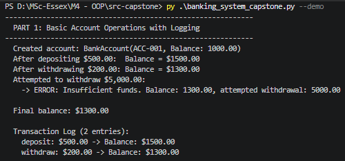
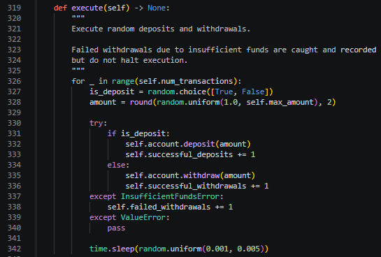
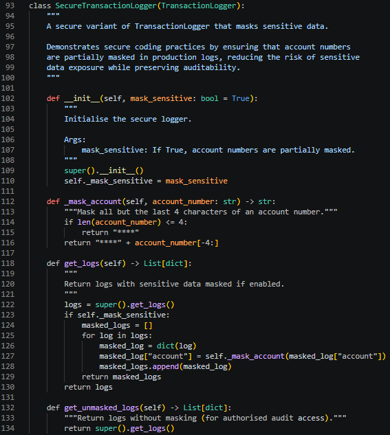
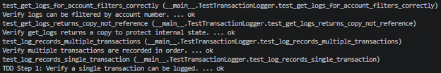
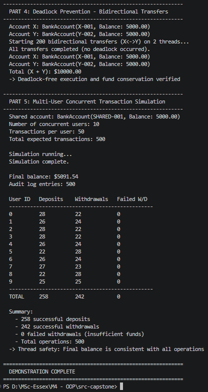

Task 2: Showcase Artefacts
2.1 Coding Exercise: Advanced Thread-Safe Banking System (Capstone)
The capstone project significantly extends the original banking system with layered architecture, dependency injection, and secure coding features. The full source code is available in the GitHub repository.
Key Enhancements from Original Submission:
| Enhancement | Concept Demonstrated |
|---|---|
TransactionLogger class |
Layered Architecture (Persistence Layer) |
SecureTransactionLogger class |
Secure Coding, Decorator Pattern, Polymorphism |
lock_factory parameter in BankAccount |
Dependency Injection / IoC |
| 11 new unit tests (41 total) | TDD, mocking, DI validation |

Development Process and Error Resolution:
During capstone development, a subtle bug was encountered in SecureTransactionLogger.get_logs(). The method created a copy of each log entry for masking but failed to add the modified copy to the returned list. Unit tests caught this data leakage immediately—the masking test failed because full account numbers appeared in the output. The fix required appending each masked dictionary to a new list. This experience demonstrated how TDD catches security-critical bugs that could expose sensitive information in production.
Other challenges included ModuleNotFoundError from incorrect import paths (resolved by consolidated file structure) and Git authentication issues (resolved via Personal Access Token configuration).
Seminar Demonstration:
A demonstration of the original banking system was presented during the Unit 6 seminar on 1-June 2026. The presentation covered the system architecture, thread-safety mechanisms, and test results. Feedback received praised the code structure and report organisation, with suggestions to consolidate multiple code files into a single file for easier review and to include a reference section in the final report. Both suggestions were incorporated into the submitted work and carried forward into the capstone development.
Case Study: Layered Architecture for Scalable Systems:
The capstone's layered design serves as a case study in scalable architecture. The business layer (BankAccount, TransferService) is decoupled from the persistence layer (TransactionLogger) through dependency injection. This allows the logging mechanism to be swapped—from in-memory to database-backed—without modifying business logic. SecureTransactionLogger demonstrates how the Decorator Pattern enables security enhancements without altering the parent class.
Independent Working and Critical Reflection:
This project was completed independently, with design decisions made through critical evaluation of trade-offs. Choosing DI for lock injection over hardcoded locks, implementing TDD for the logger, and selecting a layered architecture over a monolithic design all required weighing flexibility against complexity.
AI-Readiness Considerations:
The TransactionLogger infrastructure provides structured transaction data suitable for ML pipelines. Clean interfaces enable AI model integration, and the DI pattern allows AI-driven components to be injected alongside existing business logic.
2.2 Advanced Design Patterns: Practical Application
Strategy Pattern — UserTransactionTask
The separation of UserTransactionTask from TransactionSimulator follows the Strategy Pattern. Different transaction behaviours can be implemented as separate classes and injected into the simulator without modifying its threading infrastructure.

Why this pattern: The Strategy Pattern enables runtime behavioural flexibility. A deposit-only stress test or a withdrawal-heavy scenario could be created as new UserTransactionTask subclasses and passed to the same TransactionSimulator. This improves maintainability by isolating transaction logic from thread management, and enhances testability by allowing each strategy to be tested independently.
Decorator Pattern — SecureTransactionLogger
SecureTransactionLogger demonstrates the Decorator Pattern in practice. It wraps TransactionLogger and adds data masking to get_logs():

Why this pattern: The Decorator Pattern supports the Open/Closed Principle. Security layers can be added without modifying the core logging class. This is valuable in regulated industries where audit requirements evolve independently of business logic.
Visitor Pattern — Conceptual Application
The Visitor Pattern separates algorithms from object structures. In the banking system, this could be applied to generate reports or analytics across different account types without adding reporting logic to each account class.
Why this pattern: The Visitor Pattern was explored because it separates analytics logic from the core account structure. Adding a new report type should not require modifying every account class, improving extensibility.
Abstract Factory — Conceptual Application
The Abstract Factory pattern could create families of related account types (savings, current, business) with consistent interfaces. This would allow switching between different banking service providers or regulatory regimes by changing the factory implementation.
Why this pattern: The Abstract Factory pattern was considered for its ability to create families of related objects with consistent interfaces. In a multi-tenant banking platform, swapping the factory implementation enhances maintainability and scalability.
Pattern Selection Trade-offs:
The Strategy Pattern was prioritised for the original assignment. The Decorator Pattern was implemented in the capstone to demonstrate practical security extension. Visitor and Abstract Factory remain conceptual—their benefits for future extensions are acknowledged, but implementing them now would add complexity disproportionate to current scope. Managing abstraction versus over-engineering was a key consideration throughout the design process.
2.3 Testing: Mocking, TDD, and AI-Driven Testing
Test-Driven Development (TDD)
The TransactionLogger class was developed following TDD principles. Tests were written before implementation:
- RED:
test_log_records_single_transactionfailed—noTransactionLoggerclass existed - GREEN: Minimal
log()andget_logs()methods implemented - REFACTOR:
get_logs_for_account()filtering andclear()added while keeping tests green
The SecureTransactionLogger masking bug (described in 2.1) was also caught by TDD—the failing test guided the exact location of the fix.
Mocking Frameworks
The TestDependencyInjection class uses unittest.mock.MagicMock to inject mock locks, verifying that deposit calls __enter__ and __exit__ without relying on real threading. This isolates the DI mechanism from concurrency behaviour.

AI-Assisted Testing Reflection
The module introduced AI-driven testing concepts including automated test-case generation and intelligent edge-case discovery. The deterministic tests produce precise expected values, making them suitable for regression testing in CI/CD pipelines. The TransactionLogger's structured log format could support automated test generation by providing predictable input-output patterns.

Testing Complexity
Testing concurrent code presents unique challenges. Race conditions are inherently non-deterministic, meaning a test might pass on one execution and fail on the next. To address this, the test suite includes both random simulations (for real-world coverage) and deterministic tests (for reproducible verification). The deterministic tests use fixed transaction patterns with precisely calculated expected outcomes, ensuring that thread-safety violations produce consistent failures rather than intermittent ones.
Testing Philosophy
Testing is framed as supporting object-oriented quality rather than replacing engineering judgement. The expanded 41-test suite verifies correctness but does not substitute for careful design.
2.4 Artefact Summary
| Artefact | Pattern/Principle | Key Benefit |
|---|---|---|
| Thread-safe banking system | SRP, Encapsulation, Defensive Programming | Maintainable, extensible architecture |
UserTransactionTask |
Strategy Pattern | Runtime behavioural flexibility |
TransferService lock ordering |
Canonical Ordering Pattern | Deadlock-free concurrent transfers |
SecureTransactionLogger |
Decorator Pattern, Secure Coding | Dynamic security layers, data masking |
BankAccount DI constructor |
Dependency Injection / IoC | Testable, flexible synchronisation |
| Unit test suite (41 tests) | TDD, Mocking, Isolated testing | Reliable regression testing |
TransactionLogger |
Layered Architecture | Decoupled persistence tier |